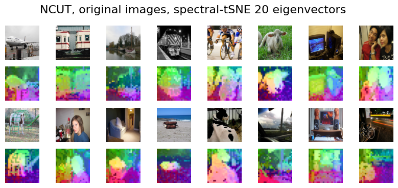
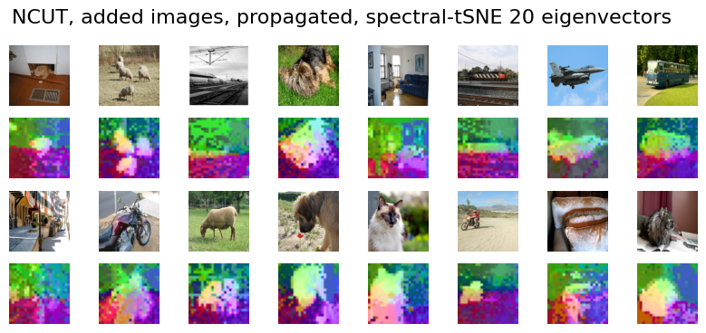
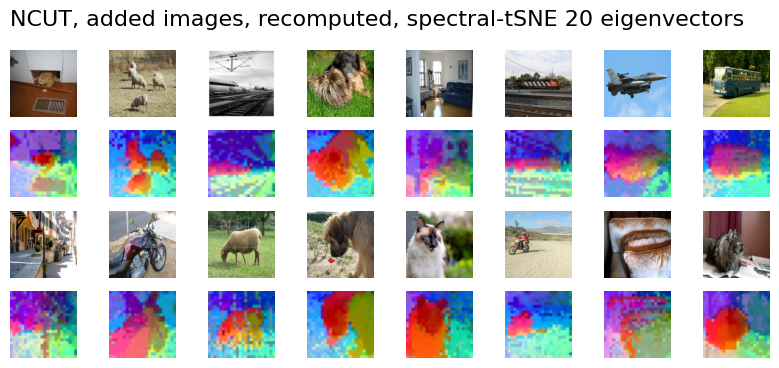

Tutorial: Adding New Nodes to Existing Graph
Once NCUT is computed, it is possible to add nodes to the existing graph. New nodes are assigned with eigenvectors/color by KNN Propagation, in other words, the new nodes are treated as they were not sampled in the nystrom approximation, they only join the propagation step. This is a good approach when the original sampled nodes have good cover of the newly added nodes.
Click to expand full code
dataset = torchvision.datasets.VOCSegmentation(...)
feat = feature_extractor(images, layer=9)
# Feature shape for 100 images: torch.Size([100, 32, 32, 768])
| import torchvision
import torch
from torchvision import transforms
from PIL import Image
import numpy as np
dataset_voc = torchvision.datasets.VOCSegmentation(
"/data/pascal_voc/",
year="2012",
download=True,
image_set="val",
)
print("number of images in the dataset:", len(dataset_voc))
# create a large-scale feature matrix
images = [dataset_voc[i][0] for i in range(100)]
feats = feature_extractor(images, resolution=(336, 336), layer=9)
print("Feature shape for 100 images:", feats.shape)
num_nodes = np.prod(feats.shape[:3])
print("Number of nodes for 100 images:", num_nodes)
# Feature shape for 100 images: torch.Size([100, 32, 32, 768])
# Number of nodes for 100 images: 102400
|
NCUT on Original Images
| from ncut_pytorch import NCUT
input_feats = feats.flatten(0, 2)
eigenvectors, eigenvalues = NCUT(
num_eig=20, num_sample=30000, knn=10, affinity_focal_gamma=0.5, device='cpu'
).fit_transform(input_feats)
|
Click to expand full code
def plot_images(images, rgb, title):
...
| import matplotlib.pyplot as plt
def plot_images(images, rgb, title):
fig, axs = plt.subplots(4, 8, figsize=(10, 4))
for i_row in range(0, 4, 2):
for i_col in range(8):
ax = axs[i_row, i_col]
image = images[i_row * 4 + i_col]
image = image.resize((224, 224), Image.BILINEAR)
ax.imshow(image)
ax.axis("off")
for i_col in range(8):
ax = axs[i_row + 1, i_col]
ax.imshow(rgb[i_row * 4 + i_col])
ax.axis("off")
plt.suptitle(title, fontsize=16)
plt.show()
|
| # apply t-SNE for visualization of the eigenvectors
from ncut_pytorch import rgb_from_tsne_3d
X_3d, rgb = rgb_from_tsne_3d(
eigenvectors[:, :20], num_sample=30000, perplexity=100, device="cuda:0", knn=10
)
image_rgb = rgb.reshape(feats.shape[:3] + (3,))
plot_images(images, image_rgb, "NCUT, original images, spectral-tSNE 20 eigenvectors")
|

| new_images = [dataset_voc[i][0] for i in range(1000, 1100)]
new_feats = feature_extractor(new_images, resolution=(336, 336), layer=9)
print("Feature shape for new images:", new_feats.shape)
|
Propagate Eigenvectors to New Images
| from ncut_pytorch import propagate_eigenvectors, propagate_rgb_color
new_eigenvectors = propagate_eigenvectors(eigenvectors[:, :20], feats.reshape(-1, feats.shape[-1]), new_feats.reshape(-1, new_feats.shape[-1]), knn=10)
new_rgb = propagate_rgb_color(rgb, eigenvectors[:, :20], new_eigenvectors[:, :20], knn=10)
plot_images(
new_images,
new_rgb.reshape(new_feats.shape[:3] + (3,)).cpu(),
"NCUT, added images, propagated, spectral-tSNE 20 eigenvectors",
)
|

Comparison: Recompute Eigenvectors vs. Propagate Eigenvectors
Recomputing the eigenvectors results in better segmentation, but the color is not consistent with previous images.
| recomputed_eigenvectors, _ = NCUT(
num_eig=50, num_sample=30000, knn=10, affinity_focal_gamma=0.3, device="cuda:0"
).fit_transform(new_feats.reshape(-1, new_feats.shape[-1]))
recomputed_rgb = rgb_from_tsne_3d(
recomputed_eigenvectors[:, :20], num_sample=30000, perplexity=100, device="cuda:0", knn=10
)[1].reshape(new_feats.shape[:3] + (3,))
plot_images(
new_images,
recomputed_rgb,
"NCUT, added images, recomputed, spectral-tSNE 20 eigenvectors",
)
|
